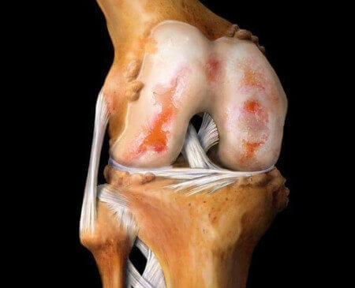

¡ATENCIÓN!
¡Puede ordenar Parafrix para reparar sus articulaciones a un precio especial!
Profesor Joseph Verga: "¡Se pasan años tratando las articulaciones mientras se pueden reparar en tan solo 30 días !"
Lea el artículo sobre el tratamiento de enfermedades del sistema musculo-esquelético y descubra cómo comprar un remedio para el tratamiento de las articulaciones con descuento.
En 2019, un equipo de investigación dirigido por el profesor Joseph Verga realizó una serie de pruebas de un tratamiento para las articulaciones en el laboratorio. Los resultados superaron todas sus expectativas. ¡Después de comparar el nuevo producto con medicamentos conocidos, los científicos no dudan de que ha comenzado una nueva era en la Reumatología! Los investigadores solicitaron la certificación del remedio y ya querían lanzarlo a la venta cuando ocurrió una tragedia irreparable: la muerte del profesor Joseph Verga. ¿Es posible que el remedio salga a la venta? Nuestro corresponsal hizo esta pregunta al mejor reumatólogo Húngaro, Joseph Verga, que también participó activamente en el estudio.
Comentario del Dr. Joseph Verga: "Nos sorprendió la notificación de la muerte del profesor Joseph Verga y decidimos terminar aquello a lo que dedicó toda su vida".
Corresponsal: Hola, doctor. ¿En qué etapa se encuentra ahora el desarrollo de este remedio?
Joseph Verga: Hola, David. Me complace informar que, después de todas las pruebas, hemos obtenido el permiso para lanzar el remedio al mercado farmacéutico. Los ingredientes de nuestro gel Parafrix tienen un efecto tan positivo en las articulaciones que los movimientos ya no le causarán sensaciones dolorosas o molestias. ¡Comenzará a moverse libremente!
Los estudios clínicos de Parafrix han demostrado su alta efectividad para el tratamiento de enfermedades del sistema musculo-esquelético.
Corresponsal: ¿Podría contarnos cual es la diferencia entre Parafrix y los remedios comunes de las farmacias?
Algunos medicamentos pueden aliviar el dolor, pero solo tienen un efecto temporal y la mayoría de las veces solo eliminan los síntomas, y las causas de la enfermedad permanecen intactas. Además, el uso prolongado de tales medicamentos destruye los riñones, el hígado y el estómago. En términos generales, es un círculo cerrado en el que el paciente se ve obligado a utilizar constantemente medicamentos para reducir el dolor, que tienen un efecto negativo en su cuerpo, mientras que la causa del dolor no se trata. Y es que las enfermedades del aparato musculo-esquelético son extremadamente peligrosas y pueden conducir a consecuencias devastadoras, como tumores malignos.
Permítame mostrarle también qué consecuencias pueden tener las enfermedades de las articulaciones. Las patologías más comunes se desarrollan de la siguiente manera:
| Enfermedad | Complicaciones en la etapa inicial | Complicaciones en la etapa tardía |
|---|---|---|
| Artritis | Necrosis del cartílago, fractura de la articulación, sinovitis | Fractura total de la articulación, sepsis, tumores malignos de las articulaciones |
| Osteoartritis | Inflamación del cartílago, cambios en la estructura de la articulación y su destrucción, riesgo de infección de sangre | Discapacidad (insuficiencia articular), destrucción del cartílago, tumores malignos de las articulaciones |
| Osteocondrosis | Protuberancia de la columna vertebral, desplazamiento de los discos intervertebrales, nervios pellizcados | Hernia discal, enfermedades del sistema nervioso central, riesgo de insuficiencia de órganos y tumores malignos de la médula espinal |
| Coxartrosis | Aumento del hueso, cambios degenerativos del cartílago y la articulación, cambios degenerativos de la cápsula articular | Limitación de la actividad motora (discapacidad de primer o segundo grado), cáncer |
| Osteoporosis | Necrosis del tejido conectivo, necrosis del tejido óseo (que conduce a la fragilidad excesiva del hueso) | Deformación ósea y esquelética, insuficiencia de las extremidades, riesgo de cáncer debido a la necrosis ósea |
| Bursitis | Inflamación de la bolsa periarticular sinovial, acumulación de pus | Envenenamiento de la sangre, insuficiencia articular, descomposición de los tejidos musculares, tumores malignos |
| Podagra | Inflamación de la articulación del pie, deposición de sales de calcio, concentración de cristales de ácido úrico en los tejidos óseos | Deformación del valgus, aumento del tamaño de las articulaciones, necrosis ósea del pie, tumores benignos |
Como puede ver, las enfermedades de las articulaciones a menudo conducen a complicaciones graves que terminan con discapacidad o incluso la muerte. En los últimos 100 años, la carga en el esqueleto humano ha aumentado constantemente. Como resultado, casi todas las personas mayores de 25 años experimentan malestar como mínimo en 1-2 articulaciones. A la edad de 35-40 años, la enfermedad progresa y tiene graves complicaciones.
Como ejemplo, puede ver estas fotos tomadas en hospitales:
1. Articulación de la rodilla del paciente con artrosis (el paciente utilizó tratamientos "clásicos"). Las inyecciones aliviaban el dolor por poco tiempo, pero no ralentizaban el desarrollo de la enfermedad. Como consecuencia, le tuvieron que amputar la pierna. Ahora está discapacitado.

2. Consecuencias de la Osteocondrosis (en lugar de otros tratamientos se usaron analgésicos). Resultado: dos hernias se convirtieron en tumores malignos. La paciente fue operada, pero desafortunadamente la cirugía no le ayudó y la mujer falleció.
3. Consecuencias de la artritis de manos. Como saben, es imposible ayudar al paciente cuando el proceso inflamatorio ya ha cobrado impulso y ha provocado sepsis. Al paciente le amputaron la mano y parte del antebrazo, pero ni siquiera eso pudo salvarle: la infección se extendió por todo el cuerpo y el hombre murió seis meses después de un tratamiento intenso.
Ahora hablemos de algo más positivo. Al igual que muchos otros científicos médicos, el profesor Joseph Verga dedicó décadas al estudio de la medicina alternativa. Estaba especialmente interesado en los secretos de la longevidad y la salud. Por lo tanto, unimos nuestras fuerzas para aprovechar al máximo el conocimiento y los resultados de la investigación del profesor en la creación de la fórmula Parafrix. Hace tiempo que los ingredientes naturales de Parafrix demostraron que desempeñan un papel clave en el tratamiento de enfermedades del sistema musculoesquelético. Durante su uso, no se requiere terapia complementaria, ya que estos componentes garantizan mejorar el flujo sanguíneo, que detiene la necrosis y la inflamación y desencadena el proceso de regeneración. El problema es que todo eso parece sencillo a simple vista, pero en la práctica, ninguno de los medicamentos conocidos combina estos ingredientes con éxito. Afortunadamente, ahora hemos creado Parafrix. Además, después de terminar los estudios clínicos, decidimos realizar una oferta especial, durante la cual el medicamento se puede adquirir con un descuento.
Antes de que se seleccionara el medicamento para su distribución a un precio especial, realizamos estudios clínicos a gran escala que involucraron a 10120 pacientes de diferentes categorías de edad. El 93,8% de ellos se curaron por completo de la enfermedad, mientras que el 5,6% todavía tenía algunos problemas, pero en general su condición mejoró significativamente. Les explicaré: los sujetos con una forma severa de artritis, que apenas podían caminar, después del tratamiento, solo experimentaban dolores menores de vez en cuando. Solo el 0. 6% de los sujetos experimentaron mejoras que no le permiten decir que se recuperaron por completo.
Corresponsal: ¿Le he oído bien? ¿Está ofreciendo este increíble remedio con un descuento?
Joseph Verga: Sí, así es. En memoria del profesor Joseph Verga, hemos creado un fondo especial que lleva su nombre y hemos encontrado patrocinadores que nos han permitido ejecutar un programa de tratamiento de articulaciones. Los patrocinadores proporcionaron 300000 euros A la Academia de Reumatología. Por este motivo tenemos la oportunidad de vender Parafrix con un descuento, mientras que el precio total del embalaje es de SSSS euros. Y sí, realmente funciona. He dirigido personalmente los estudios clínicos y puedo confirmar que es un remedio muy eficaz.
Disco articular normal
Cambios degenerativos del disco articular
Protrusión de disco
Deslizamiento del disco
Desgaste del disco
Degeneración del disco con osteofitos
Permítanos mostrarle los resultados de los estudios clínicos que hemos realizado para el gel Parafrix. Sorprendieron a muchos médicos. Este remedio será una verdadera salvación para los pacientes que sufren de dolor en las articulaciones.

El dolor desapareció en unos 8-10 minutos en el 100% de los voluntarios
Después del curso con Parafrix, el tejido cartilaginoso se recuperó en el 98% de los casos
El 93% de los voluntarios se han deshecho de la artritis y la artrosis después del tratamiento
Y estas son las imágenes de las articulaciones "antes" y "después" del uso de Parafrix.
Corresponsal: ¡Realmente impresionante! ¿Podría explicar que significa esto para las personas comunes que sufren de enfermedades de las articulaciones?
Joseph Verga: Esto significa que la medicina moderna ha avanzado mucho y ahora las articulaciones se pueden curar en casa en tan solo unas semanas. Parafrix no es un analgésico. "Reinicia" el organismo a nivel celular, eliminando la causa de la enfermedad y devolviendo las articulaciones y la columna vertebral a su estado natural. El paciente no solo alivia los síntomas, sino que también elimina por completo la causa de la enfermedad al mejorar el flujo sanguíneo al cartílago, que anteriormente había sido debilitado por las células lentas y viejas.
Parafrix inicia el proceso de regeneración del organismo desde los primeros días de uso. También reduce el dolor, por lo tanto sentirá su efecto de inmediato. En tan solo 30 días, reparará las articulaciones por completo.
Corresponsal: ¿Parafrix ayuda solo con ciertas enfermedades del sistema musculoesquelético?
Joseph Verga: No. Como ya dije, el remedio funciona a nivel celular, estimulando los procesos de regeneración. Ayuda en el tratamiento de todas las enfermedades de las articulaciones y la espalda, incluida la artrosis, la artritis, la osteoporosis, el reumatismo, la gota, la ciática, la radiculitis, la Osteocondrosis, el desplazamiento de los discos vertebrales y muchas otras. Trata cualquier patología de las articulaciones en cualquier etapa.
Corresponsal: ¿El gel realmente elimina todas estas enfermedades, y no solo alivia el dolor?
Joseph Verga: Parafrix alivia el dolor (en las etapas iniciales del tratamiento) y cura completamente la enfermedad. Naturalmente, hay otros tratamientos para estas enfermedades, pero por lo general terminan en cirugía, que es extremadamente peligrosa. Sin mencionar que estas operaciones son muy costosas y pocos pueden permitírselas.
Certificado que confirma la eficacia de Parafrix
Corresponsal: ¿Cómo adquirir Parafrix con un descuento? ¿Quién puede hacerlo?
Joseph Verga: Cualquiera puede encargarlo. Solo quiero señalar que debido a los pequeños volúmenes de producción, la cantidad de unidades en promoción a un precio especial es limitada. A pesar de esto, cualquier persona puede completar el formulario de pedido y comprar Parafrix con un descuento. Basta con indicar su nombre y número de Teléfono. Poco después, el operador de nuestro centro de asesoramiento se pondrá en contacto con usted.
Corresponsal: ¿Cuándo termina esta promoción?
Joseph Verga: La promoción dura hasta (incluido). Todo lo que se debe hacer es dejar una solicitud en la página web. Si aún no lo ha hecho, le aconsejo que se apresure, ya que muy pronto será imposible comprar el producto a un precio especial con un descuento. Personalmente, le garantizo que todos los pedidos realizados durante la promoción serán procesados y todos recibirán su pedido.
Corresponsal: ¡Muchas gracias por la entrevista! ¿Le gustaría decir algo a nuestros lectores antes de que terminemos la reunión?
Joseph Verga: Sí, claro. Me gustaría recordar a los lectores que las enfermedades de la columna vertebral y las articulaciones son cada vez más comunes entre los jóvenes y que incluso los dolores leves e intermitentes son una señal para que presten atención a su salud. No espere que los médicos lo persuadan para que se trate, su salud está en sus manos.
Y recuerde: las enfermedades que se manifiestan en dolor de espalda y articulaciones no solo causan incomodidad. Reducen la esperanza de vida en 15-20 años.
A fecha de 31.06.2021 La
cantidad disponible a un precio especial es de:
23
Complete el siguiente formulario para obtener Parafrix a un precio con descuento: por
119999 COP
23
Recuerde que el descuento solo es válido hasta el (incluido)

Saludos, Joseph verga
Saludos, Joseph verga
Saludos, Joseph verga
¡La oferta sigue en pie, dense prisa!
Lo compré en la página oficial. Enseguida me llamaron y confirmaron el pedido. Estoy harta de esta vida con dolor, quiero apuntarme a clase de baile
Saludos, Joseph verga
Cuidado con las falsificaciones.
Saludos, Joseph verga